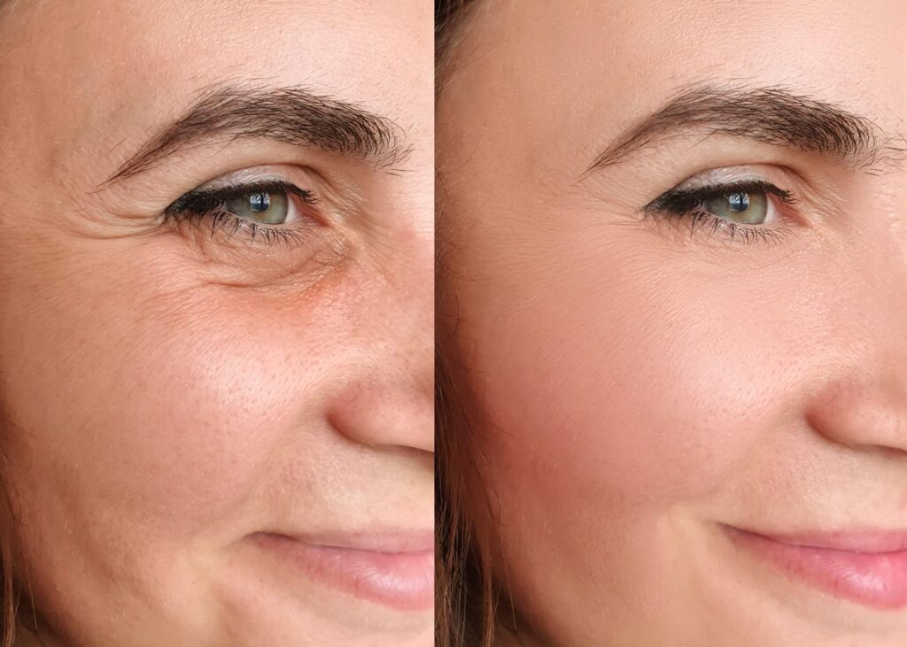

+380(97) 369 76
65
+380(97) 369 76
65Лечение женского алкоголизма в Одессе
Наши действия и программы доказали свою эффективность в успешном лечении женского алкоголизма
Работаем в Одессе, Киеве, Львове, Харькове, Днепре, Запорожье, Черноморске


Бесплатная консультация, работаем круглосуточно 24/7
Наши действия и программы доказали свою эффективность в успешном лечении женского алкоголизма
Работаем в Одессе, Киеве, Львове, Харькове, Днепре, Запорожье, Черноморске
Женский алкоголизм - это тяжелое хроническое патологическое состояние которое развивается у женщины в следствии длительного и регулярного употребления алкоголя. Оно характерно бесконтрольным и регулярным приемом алкогольных напитков в больших объемах сопровождающееся обязательно такими критериями как - высокая толерантность к выпивке, утрата социального контроля , а так же патологическое желание выпить и похмелиться.
Симптомы женского алкоголизма можно разделить на ранние и поздние
К ранним симптомам женского алкоголизма относятся: Нервозность и психоэмоциональная лабильность , отсутствие аппетита во время выпивки , увеличивается частота употребления, любой выходной или прогулка в город сопровождается алкогольными напитками.
К поздним симптомам женского алкоголизма относятся: Тяжелое нарушение сна - бессонница , отсутствие тошноты и рвоты вне зависимо от объема выпитого спиртного, высокая толерантность и постоянное желание выпить , наличие симптома опохмеление. К поздним симптомам женского алкоголизма так же относится патологическое вранье и “скрытность” пациента.
Алкоголизм у женщин формируется под воздействием биологических, психологических и социальных факторов. Биологически женщины быстрее становятся зависимыми из-за особенностей метаболизма и гормональных изменений. Психологически алкоголь часто используется для снятия стресса, тревожности или депрессии. Социальные факторы, такие как давление общества или проблемы в отношениях, также могут способствовать злоупотреблению. Зависимость развивается через несколько этапов: от случайного употребления до хронической зависимости, сопровождающейся серьёзными последствиями для здоровья и личной жизни.
Алкоголизм у женщин развивается быстрее, чем у мужчин, и часто сопровождается более серьезными физическими и психическими последствиями. Проблема усугубляется тем, что женщины реже обращаются за помощью, что делает раннюю диагностику и лечение алкоголизма сложной задачей.
Принято делить женский алкоголизма на три стадии:
1.Ранняя стадия женского алкоголизма сопровождается учащенным употреблением спиртного под прикрытием тяжелого дня или стрессовой работы которая сопровождается такими симптомами как : учащенное употребление без повода , алкоголь употребляется для улучшения субъективного настроения , теряется контроль над объемом выпиваемого , нарушается сон и появляется агрессия.
2.Вторая стадия или стадия физической зависимости - на второй стадии появляется физическая зависимость от алкоголя вследствие прогрессирования женского алкоголизма из за частого употребления спиртного, сопровождается она первыми запоями , желанием опохмелиться а так же сменой планов ради выпивки с утратой социального контроля над ситуацией после приема алкоголя.
3.Третья стадия - стадия полной деградации - на третьей стадии выпивка становится на постоянной основе и занимает любое свободное время , развивается аморальное и асоциальное поведение , сильнейшая деградация пациентки , снижение интеллекта а так же утрата чувства ответственности и какого либо социального контроля, появляются суицидальные мысли а так же присоединяются хронические заболевания сердца , печени и центральной нервной системы.
Что бы вылечить женский алкоголизм вам нужно обратиться к врачам наркологам города Одессы по номеру 050-021-69-57. Доктор оценит состояние пациентки , проведет первичную консультацию а так же определит стадию и составит индивидуальный план лечения зависимой женщины.
Что бы вылечить женский алкоголизм пациентка должна пройти три обязательных основных этапа в лечении зависимости
Стоимость лечение женского алкоголизма в Одессе начинается от 1499грн и может меняться в зависимости от тяжести и стадии зависимой.
| Услуга | Цена |
|---|---|
| Лечение алкоголизма Одесса | От 1499 грн |
| Вывод из запоя Одесса | От 1499 грн |
| Вывод из запоя на дому Одесса | От 1699 грн |
| Капельница от алкоголя Одесса | От 1499 грн |
| Капельница от алкоголя на дому Одесса | От 1699 грн |
| Лечение пивного алкоголизма Одесса | От 1499 грн |
| Лечение женского алкоголизма Одесса | От 1499 грн |
| Кодирование от алкоголизма Одесса | От 3999 грн |
| Кодирование уколом Одесса | От 3999 грн |
| Кодирование от алкоголизма уколом Дисульфирам | От 3999 грн |
| Кодирование от алкоголизма уколом Эспераль | От 5500 грн |
| Подшивка от алкоголя Одесса | От 9999 грн |
| Кодирование по методу Довженко Одесса | От 14999 грн |
Лечение женского алкоголизма всегда должно быть комплексное и состоять из медикаментозной и психологической помощи включая в себя все три главных этапа в лечении алкогольной зависимости. Только пройдя все три шага можно добиться длительной а иногда и пожизненной ремиссии создав условия для постоянной трезвости зависимой на спиртные напитки женщины.
%% This won't render without implementing a rendering engine (e.g. mermaid on npm)
flowchart TD
id1(Консультация нарколога)
--> id2(Капельница от алкоголя)
id2
--> id3(Кодирование от алкоголизма)
--> id4(Психотерапия)
Кодирование от женского алкоголизма в Одессе происходит одним из трех вариантов
1 Кодирование от алкоголизма с помощью укола - самый популярный метод кодирование от алкоголизма , суть метода заключается в ведении пациенту дисульфирама в инъекционном виде который вызывает немедленный токсический эффект в случаи если пациент употребит алкоголь и может закончится летальным исходом.
2 Кодирование от алкоголизма с помощью подшивки от алкоголя - хороший метод лечения алкоголизма хирургическим путем , суть метода заключается в имплантации пациенту дисульфирамо-подобного вещества который имеет большую концентрацию блокатора от алкоголя и может вызывает немедленный токсический эффект вплоть до летального исхода.
3 Кодирование от алкоголизма по методу Довженко - суть метода заключается в гипнотерапии для формирования у женщины стойкого отвращения к спиртному на психологическом уровне.
Если вы заметили что ваша мама , супруга или сестра начала часто злоупотреблять спиртным , оправдывать очередную дозу выпивки стрессом или средством для лечения бессонницы и тревожности - стоит немедленно обратиться к врачу наркологу для консультации и возможного лечения зависимости , помните любой алкоголизм это всегда постоянно прогрессирующая патология которая может протекать на первых этапах с минимальным набором симптомов. Что бы обратиться к врачу наркологу Одессы вам нужно позвонить по номеру 050-021-69-57.
У женщин, страдающих алкоголизмом, изменения на лице выражаются в ряде характерных признаков. Кожа теряет эластичность, становится сухой, шершавой и тусклой, иногда с желтоватым оттенком из-за проблем с печенью. Из-за хронического обезвоживания и недостатка витаминов на лице появляются глубокие морщины, особенно вокруг глаз и рта. Лицо часто выглядит опухшим из-за задержки жидкости в организме. Под глазами образуются тёмные круги, лицо может покраснеть, часто проявляются сосудистые звёздочки или капиллярные сетки. Из-за нарушения кровообращения лицо может иметь нездоровый серый или красноватый оттенок. Также меняется структура волос и ногтей — они становятся ломкими и тонкими.

Лучшим местом для лечения женского алкоголизма в Одессе считается медицинская служба UmbrellaPlus « Безопасная Наркология » . В клинике лечения женского алкоголизма Одессы квалифицированный врач нарколог объяснит стадию и форму зависимости а так же подберет комбинированное хорошее лечение не только симптомов но и причины алкоголизма а так же сформирует твердое отвращение к любым спиртным напиткам. Что бы позвонить в клинику лечения женского алкоголизма UmbrellaPlus « Безопасная Наркология » вам нужно набрать по номеру 050-021-69-57.
Самым эффективным лечением женского алкоголизма считается трехэтапное лечение алкогольной зависимости при которой требуется высокая квалификация врача нарколога для формирования стойкой мотивации у зависимой женщины.
Эффективное лечение женского алкоголизма считается только после того как удалось сформировать у зависимой женщины стойкое отвращение к любой алкогольной выпивке на физическом и психологическом уровне , так же для эффективного метода лечения алкоголизма используется капельница от алкоголя на дому или в стационаре а так же кодирование от алкогольной зависимости. Что бы получить комплексное медикаментозное лечение вам нужно позвонить по номеру 050-021-69-57 и получить бесплатную консультацию доктора нарколога который объяснит вам последующие шаги в лечении зависимой женщины.
Лечение хронического женского алкоголизма считается самым сложным но возможным а так же хорошо поддающиеся длительной ремиссии , в настоящее время хроническим женским алкоголизмом принято считать ту форму зависимости при которой женщина употребляет спиртные напитки с целью лечения любого тревожного расстройства а так же плохого настроения на протяжении более чем 6-12 месяцев. Эффективное лечение женского алкоголизма - это комбинированное комплексное лечении в следствии которого у зависимой женщины удалось поломать ложные убеждения в сторону зависимости а так же с помощью медикаментозной и психологической терапии изменить отношение к любым спиртным напиткам а так же сформировать стойкое отвращение к любому алкоголю.
Народным методом лечения женского алкоголизма в лечении интоксикации мы рекомендуем употребление большого количества щелочной воды, прием сорбентов таких как активированный уголь или сорбекс. Аминокислоты - бетаргин и гепаргин помогут восстановить работу печени и сердца а так же легкое успокоительное по типу пустырника или валерьянки помогут нормализовать сон. Не занимайтесь самолечением это может быть опасным для вашего здоровья. Обратитесь к врачу наркологу в городе Одесса по номеру 050-021-69-57.
Анонимно

"Никакими усилиями самостоятельно я не смогла преодолеть запой, и наступала ломка, сопровождаемая повышенным давлением и пульсом. Тогда я решила обратиться за помощью в клинику. Врачи оказали мне неоценимую поддержку! Уже прошел месяц, и я не только не употребляю алкоголь, но даже не испытываю к нему желания!"
Анонимно
"Могу с уверенностью порекомендовать данный центр для тех, кто ищет помощь при выводе из запоя. Я неоднократно обращался к ним и могу сказать, что цена соответствует качеству услуг. После проведения капельницы в клинике, вся тяга к алкоголю проходит, и я чувствую себя гораздо лучше. Это действительно эффективный метод, и я благодарен клинике за их профессионализм и заботу!"
Анонимно
"Я очень благодарен за то, что вы помогли мне разобраться с моей проблемой алкоголизма и найти ее решение. Давно осознавал, что без помощи профессионалов я не справлюсь, и я не ошибся, выбрав ваш центр Амбрелла. Здесь действительно предоставляется профессиональная помощь, которая оказалась для меня реальным спасением. Огромное спасибо за вашу поддержку и заботу!"
Анонимно
"Неоднократно я пытался бросить алкоголь самостоятельно, но каждый раз уговаривал себя продолжать. Я сначала ограничивался одной бутылкой в день, потом двумя, и в итоге вновь попадал в запой. Но в итоге, я смог прекратить употребление алкоголя только после того, как обратился в центр Амбрелла и заказал у них услугу вывода из запоя. Уже не пью 3 месяца и удалось полностью восстановиться. Благодарю врача который меня вел - Алексея Валерьевича"
Анонимно
"Здравствуйте! Я хотел бы выразить свою искреннюю благодарность клинике за быстрое и профессиональное освобождение моего мужа пивного рабства! Ранее у меня уже не было никаких надежд на его выздоровление. Однако, благодаря вашим перспективным методам лечения, мы теперь идем к полному отказу от алкоголя. Вы дали нам новую надежду и оказали неоценимую помощь! Спасибо вам за все!"
Анонимно
"Я долгое время страдал от запоев и не мог справиться с этой проблемой. Однако, когда я обратился в этот центр, они быстро помогли мне вернуться на ноги, и самое главное - предоставили мне возможность не возвращаться к запоям. Уже почти полгода я не испытываю запоев! Это для меня настоящее чудо, я никогда не думал, что смогу так преодолеть свои проблемы. Большое спасибо центру Амбрелла!"
Анонимно
"Благодарю ваш центр Амбрелла за оперативное и высококачественное лечение! Женский алкоголизм - это настоящее горе, с которым невозможно справиться в одиночку. Я уже потеряла надежду, но благодаря вашей помощи, она вернулась ко мне! Отдельная благодарность врачу Станиславу Вячеславовичу, а также благодарность Богу за то, что он послал мне такое чудо как ваша центр! Спасибо вам всем!"
Анонимно
"Хочу выразить благодарность врачу Владиславу Алексеевичу за то, что вы избавили меня от этого ужаса. Я уже был в отчаянии, перепробовал множество клиник и центров, но только здесь я наконец получил настоящую помощь! Алкоголь полностью разрушил меня, и если бы не ваша помощь, я, возможно, уже не был бы жив. С вами я смог вернуть себе жизнь и буду благодарен вам всегда!"
Приезд в течении 60 минут от момента поступления заявки
Наши филиалы есть во всех больших городах Украины.
Мы оказываем профессиональную доказательную медицинскую помощь. Гарантией является наше имя.
Номер телефона:
+380 (97) 369 76 65
+380 (50) 021 69 57
Адрес главного офиса: г. Харьков ул. Сумская 47
Офис вашего города нужно
уточнить
Работаем в: Одессе, Киеве, Львове, Харькове, Днепре,
Запорожье
Telegram: t.me/umbrellaplus
График работы: Круглосуточно